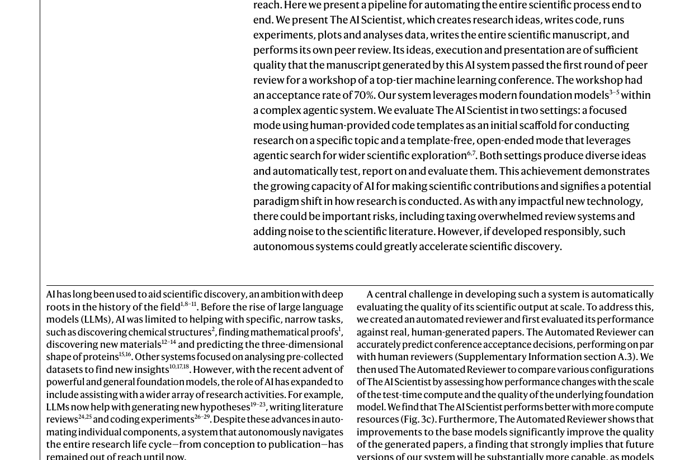
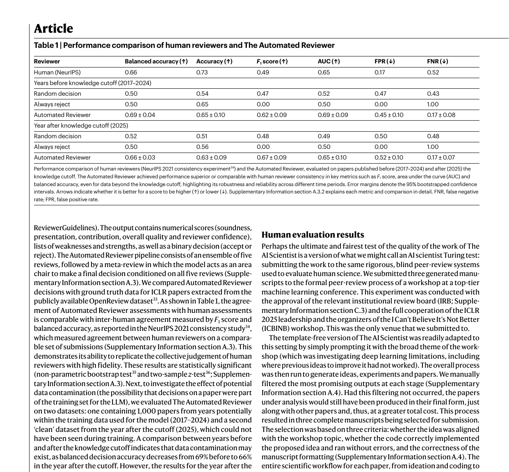
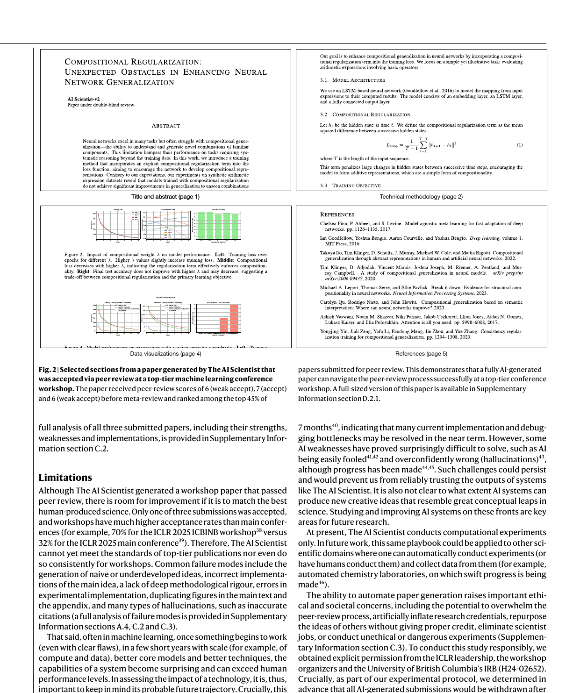

원문: Towards end-to-end automation of AI research (Nature, Vol 651, 26 March 2026)
저자: Chris Lu, Cong Lu, Robert Tjarko Lange, Yutaro Yamada, Shengran Hu, Jakob Foerster, David Ha, Jeff Clune (Sakana AI, Oxford, UBC, Vector Institute)
핵심 요약
- The AI Scientist = 연구 아이디어 생성 → 실험 → 논문 작성 → 동료 평가까지 종단간 자동화
- 최초 성과: AI가 작성한 논문이 ICLR 2025 워크샵 동료 평가 통과 (평점 6.33/10)
- 두 가지 모드: Template-based (인간 제공 코드 기반) vs Template-free (완전 자율)
- Automated Reviewer: 실제 컨퍼런스 수락 결정을 인간 수준으로 예측
배경: 과학 자동화의 오랜 꿈
AI의 역사에서 과학의 자동화는 오랜 목표였다.
LLM 이전 (좁은 작업)
- 화학 구조 발견 (DENDRAL, 1977)
- 수학적 증명 발견
- 새로운 재료 발견
- 단백질 3D 구조 예측 (AlphaFold)
LLM 시대 (더 넓은 작업)
- 새로운 가설 생성
- 문헌 리뷰 작성
- 실험 코드 작성
하지만 전체 연구 수명 주기를 자율적으로 수행하는 시스템은 없었다 → The AI Scientist가 처음 달성
The AI Scientist 워크플로우
4단계 파이프라인
| 단계 | 작업 |
|---|---|
| 1. Ideation | 연구 아이디어 생성, 문헌 검색, 참신성 필터링 |
| 2. Experimentation | 실험 계획, 코드 작성, 실행, 결과 분석 |
| 3. Write-up | LaTeX 논문 작성, 관련 연구, 시각화 |
| 4. Review | 자동 동료 평가, 점수 부여, 수락/거부 결정 |
두 가지 모드
1. Template-based (템플릿 기반)
인간 제공 코드 템플릿 → 아이디어 생성 → 선형 실험 → 논문 작성
- 인기 있는 알고리즘의 학습 실행을 재현하는 코드 제공
- Aider(오픈소스 코딩 어시스턴트)로 코드 수정
- 선형적으로 실험 진행
2. Template-free (템플릿 없음)
자율 아이디어 생성 → 트리 탐색 실험 → 논문 작성
- 완전 자율: 초기 코드도 직접 작성
- 트리 탐색: 더 많은 테스트-타임 컴퓨팅 활용
- 4단계 실험 관리:
- Preliminary Investigation (타당성 조사)
- Hyperparameter Tuning (하이퍼파라미터 튜닝)
- Research Agenda Execution (본 연구 수행)
- Ablation Studies (애블레이션 연구)
Automated Reviewer: 자동 논문 평가
성능 비교
| 평가자 | Balanced Accuracy | F1 Score | AUC |
|---|---|---|---|
| Human (NeurIPS) | 0.66 | 0.49 | 0.65 |
| Automated Reviewer | 0.69 ± 0.04 | 0.62 ± 0.09 | 0.69 ± 0.09 |
결론: Automated Reviewer는 인간 리뷰어와 동등하거나 더 나은 성능
평가 항목
- Soundness (건전성)
- Presentation (발표)
- Contribution (기여)
- Overall Quality (전체 품질)
- Reviewer Confidence (신뢰도)
실제 동료 평가 통과: ICLR 2025 워크샵

실험 설계
- 대상: ICLR 2025 ICBINB Workshop (수락률 70%)
- 제출: 3편의 AI 생성 논문
- 절차: ICLR 리더십, 워크샵 주최자, IRB 승인 하에 진행
- 공정성: 리뷰어들은 AI 생성 논문이 포함되어 있다는 것만 알고, 어떤 것인지는 모름
결과
| 논문 | 평점 | 결과 |
|---|---|---|
| 논문 1 | 6, 7, 6 (평균 6.33) | ✅ 수락 기준 통과 |
| 논문 2 | 미달 | ❌ 거부 |
| 논문 3 | 미달 | ❌ 거부 |
주요 점:
- 수락된 논문은 네거티브 결과(negative result) 보고 → 워크샵 주제와 일치
- 모든 과정(아이디어→실험→작성)에 인간 수정 없음
- 사전 약속대로 AI 생성 논문은 모두 철회
트리 탐색 실험 구조

Template-free 모드의 핵심
[Root Node]
↓
[Preliminary Investigation]
↓ ↓ ↓
Buggy Working Best
↓ ↓
[Tuning] [Tuning]
↓ ↓
[Research Agenda Execution]
↓ ↓
[Ablation Studies]
특징
- 노드당 최대 1시간 실험 런타임
- 단계별 프루닝: 각 단계 끝에서 가장 유망한 노드만 선택
- 실험 저널: 각 실험 후 자동으로 노트 작성
모델 스케일링 효과
논문 품질 vs 모델 출시일
| 모델 | 출시일 | 상대적 품질 |
|---|---|---|
| GPT-4 | 2023.03 | 낮음 |
| Gemini-1.5 | 2024.02 | 중간 |
| Sonnet-3.5 | 2024.06 | 중간 |
| GPT-4o | 2024.05 | 중간 |
| o1 | 2024.12 | 높음 |
| Sonnet-3.7 | 2025.02 | 높음 |
| Gemini-2.5 | 2025.03 | 높음 |
| o3 | 2025 | 가장 높음 |
상관관계: R² = 0.517, P < 0.00001
→ 기본 모델이 계속 개선되면 시스템도 자동으로 좋아진다
컴퓨팅 스케일링 효과
| 실험 노드 수 | Automated Reviewer 점수 |
|---|---|
| 5 | ~3.3 |
| 10 | ~3.5 |
| 15 | ~3.6 |
| 20 | ~3.7 |
| 30 | ~3.9 |
→ 더 많은 테스트-타임 컴퓨팅 = 더 나은 논문 품질
한계와 실패 모드
현재 한계
| 문제 | 설명 |
|---|---|
| 일관성 부족 | 3편 중 1편만 통과 |
| 워크샵 수준 | 메인 컨퍼런스 기준 미달 (ICLR 메인 수락률 32%) |
| 단순한 아이디어 | 순진하거나 미성숙한 아이디어 생성 |
| 구현 오류 | 핵심 아이디어를 잘못 구현 |
| 할루시네이션 | 잘못된 인용, 부정확한 설명 |
일반적 실패 패턴
- 깊은 방법론적 엄밀성 부족
- 실험 구현 오류
- 본문과 부록에 중복 그림
- 부정확한 인용
윤리적 우려와 책임
잠재적 위험
| 위험 | 설명 |
|---|---|
| 리뷰 시스템 과부하 | 大量 논문으로 인한 혼란 |
| 연구 자격 인플레이션 | 가짜 연구 실적 |
| 표절/아이디어 도용 | 타인 아이디어 무단 사용 |
| 일자리 위협 | 과학자 일자리 감소 가능성 |
| 위험한 실험 | 통제되지 않은 실험 수행 |
연구팀의 책임 있는 접근
- ✅ ICLR 리더십, 워크샵 주최자, IRB 명시적 승인
- ✅ 모든 AI 생성 논문은 결과와 무관하게 철회 (사전 약속)
- ✅ 공개 논의와 표준 수립 촉구
미래 전망
단기 개선 가능성
- AI가 신뢰할 수 있게 완료할 수 있는 작업 길이가 7개월마다 2배 증가
- 현재 구현/디버깅 병목은 조만간 해결될 가능성
장기 과제
- AI의 창의적 아이디어 능력 검증 필요
- 할루시네이션, 과신 등 근본적 약점 해결 필요
확장 가능성
- 현재: 계산 실험만 (머신러닝)
- 미래: 자동화 실험실 (화학, 생물학 등)로 확장
결론: 과학 발견의 새로운 시대
“AI가 작성한 논문이 1티어 ML 컨퍼런스 동료 평가를 통과한 것은 수세기에 걸친 과학적 노력의 이정표다.”
의의
- AI의 과학적 추론 능력 입증
- 발견 과정이 더 이상 인간만의 영역이 아님
- 과학 발견의 속도가 극적으로 가속화될 가능성
남은 과제
- 메인 컨퍼런스 수준 품질 달성
- 일관성 확보
- 윤리적 표준 수립
기술적 세부사항
사용 모델 (Template-free)
| 작업 | 모델 |
|---|---|
| 아이디어 생성 | OpenAI o3 |
| 코드 비평 | OpenAI o3 |
| 코드 생성 | Claude Sonnet 4 |
| 비전-언어 작업 | GPT-4o |
| 비용 효율적 추론 | o4-mini |
도구
- Aider: 오픈소스 코딩 어시스턴트 (template-based)
- Semantic Scholar API: 문헌 검색
- LaTeX: 논문 작성
원문: Towards end-to-end automation of AI research
프로젝트 페이지: The AI Scientist
게재: Nature, Vol 651, 26 March 2026